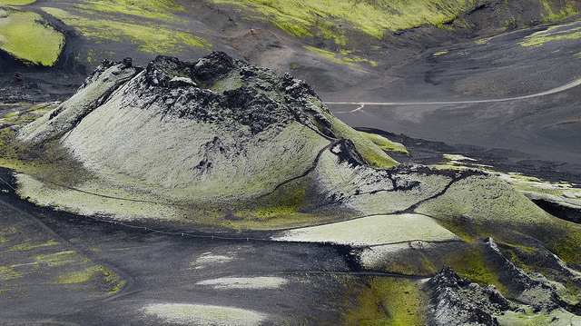
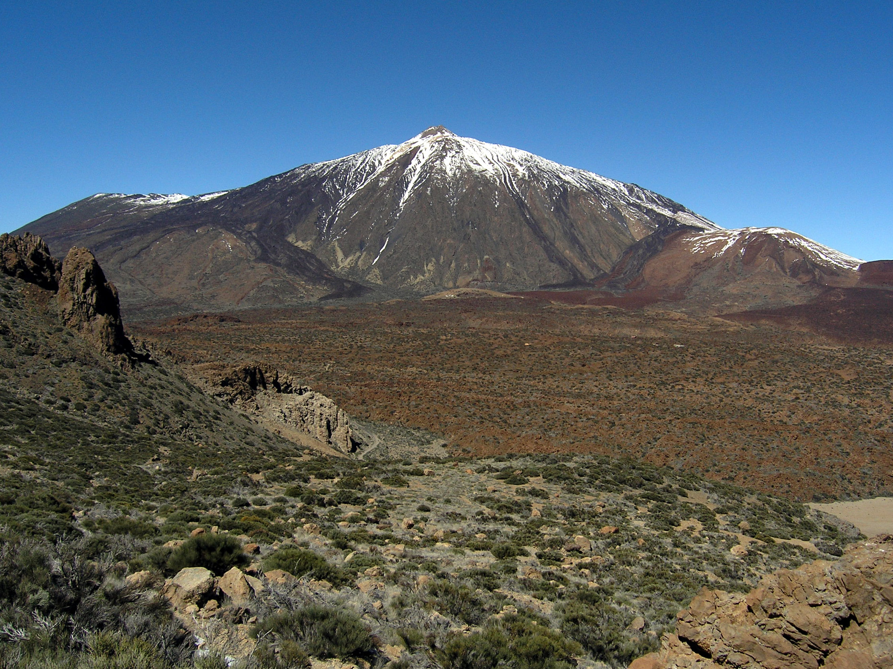

Formas volcánicas relacionadas
-
Calderas
Caldera Aniakchak, en Alaska.
La mayoría de los volcanes presentan en su cima un cráter de paredes empinadas, por el interior. Cuando el cráter supera 1 km de diámetro se denomina caldera volcánica.
Las calderas son estructuras de forma circular y la mayoría se forma cuando la estructura volcánica se hunde sobre la cámara magmática parcialmente vacía que se sitúa por debajo. Si bien la mayoría de las calderas se crea por el hundimiento producido después de una erupción explosiva, esto no es así en todos los casos.
En el caso de los enormes volcanes en escudo de Hawái, las calderas se crearon por la continua subsidencia a medida que el magma se drenaba desde la cámara magmática durante las erupciones laterales. También las calderas de las islas Galápagos se han ido hundiendo por derrames laterales.
Las calderas de gran tamaño se forman cuando un cuerpo lavático granítico (félsico) se ubica cerca de la superficie curvando de esta manera las rocas superiores. Posteriormente, una fractura en el techo permite al magma rico en gases y muy viscoso ascender hasta la superficie, donde expulsa de manera explosiva, enormes volúmenes de material piroclástico, fundamentalmente cenizas y fragmentos de pumita. Estos materiales se denominan coladas piroclásticas y pueden alcanzar velocidades de 100 km/h. Cuando estos materiales se detienen, los fragmentos calientes se fusionan para formar una toba soldada que se asemeja a una colada de lava solidificada. Finalmente, el techo se derrumba dando lugar a una caldera. Este procedimiento puede repetirse varias veces en el mismo lugar.
Se conocen al menos 138 calderas que superan los 5 km de diámetro. Muchas de estas calderas son difíciles de ubicar, por lo que han sido identificadas con imágenes de satélites. Entre las más importantes se encuentra La Garita con unos 32 km de diámetro y una longitud de 80 que está ubicada en las montañas de San Juan al sur del estado de Colorado.
-
Erupciones fisurales y llanuras de lava
Cono piroclástico en el volcán fisural Laki en Islandia.
A pesar de que las erupciones volcánicas están relacionadas con estructuras en forma de cono, la mayor parte del material volcánico es extruido por fracturas en la corteza denominadas fisuras. Estas fisuras permiten la salida de lavas de baja viscosidad que recubren grandes áreas. La Meseta del Columbia en el noroeste de los Estados Unidos se formó de esta manera. Las erupciones fisurales expulsaron lava basáltica muy líquida. Las coladas siguientes cubrieron el relieve y formaron una llanura de lava (plateau) que en algunos lugares tiene casi 1,5 km de grosor. La fluidez se evidencia en la superficie recorrida por la lava: unos 150 km desde su origen. A estas coladas se las denomina basaltos de Inundación (flood basalts).
Este tipo de coladas sucede principalmente en el suelo oceánico y no puede verse. A lo largo de las dorsales oceánicas, donde la expansión del suelo oceánico es activa, las erupciones fisurales generan nuevo suelo oceánico. Islandia está ubicada encima de la dorsal centroatlántica y ha experimentado numerosas erupciones fisurales. Las erupciones fisurales más grandes de Islandia ocurrieron en 1783 y se denominaron erupciones de Laki. Laki es una fisura o volcán fisural de 25 km de largo que generó más de 20 chimeneas separadas que expulsaron corrientes de lava basáltica muy fluida. El volumen total de lava expulsada por las erupciones de Laki fue superior a los 12 km³. Los gases arruinaron las praderas y mataron al ganado islandés. La hambruna subsiguiente mató cerca de 10 000 personas. La caldera está situada muy por debajo de la boca del volcán.
-
Domo de lava
Domos de lava en el cráter del Monte Santa Helena (Estados Unidos).
La lava rica en sílice es viscosa y por lo tanto, apenas fluye; cuando es extruida fuera de la chimenea puede producir una masa bulbosa de lava solidificada que se denomina domo de lava. Debido a su viscosidad, la mayoría está compuesto por riolitas y otros por obsidianas. La mayoría de los domos volcánicos se desarrollan a partir de una erupción explosiva de un magma rico en gases.
Aunque la mayoría de los domos volcánicos están asociados a conos compuestos, algunos se forman de manera independiente. Tal es el caso de la línea de domos riolíticos y de obsidiana en los en California.
-
Chimeneas y pitones volcánicos
Volcán Teide (Tenerife, España).
Los volcanes se alimentan del magma a través de conductos denominados chimeneas. Estas tuberías pueden extenderse hasta unos 200 km de profundidad. En este caso, las estructuras proveen de muestras del manto que han experimentado muy pocas alteraciones durante su ascenso.
Las chimeneas volcánicas mejor conocidas son las sudafricanas que están cargadas de diamantes. Las rocas que rellenan estas chimeneas se originaron a profundidades de 150 km, donde la presión es lo bastante elevada como para generar diamantes y otros minerales de alta presión.
Debido a que los volcanes están siendo rebajados constantemente por la erosión y la meteorización, los conos de cenizas son desgastados con el tiempo, pero no sucede lo mismo con otros volcanes. Conforme la erosión progresa, la roca que ocupa la chimenea y que es más resistente, puede permanecer de pie sobre el terreno circundante mucho después de que haya desaparecido el cono que la contiene. A estas estructuras de las denomina pitón volcánico. Shiprock, en Nuevo México, es un claro ejemplo de este tipo de estructuras.
-
Cuevas volcánicas
Una cueva volcánica es cualquier cavidad formada en rocas volcánicas, aunque el uso común de este término se reserva a cuevas primarias o singenéticas creadas por procesos volcánicos de modo que tanto la oquedad como la roca encajante se forman a la vez.
-
Material volcánico

El Pu`u ‘Ō‘ō, cono volcánico de Hawái.
El material volcánico se forma de rocas intrusivas (en el interior) y extrusivas (en el exterior):
-
Las intrusivas comprenden: peridotita (Au, Ag, Pt, Ni y Pb) y granito que posee Cuarzo (SiO2), Mica(SiAlx) y olivino (FeOx).
-
Las extrusivas comprenden: basalto, que tiene feldespato (KALSi3O4), plagioclasas (CaAl2SI2O8), piroxeno (Si-XOH) y magnetita Obsidiana: KAlSi3O4 y SiO2
-